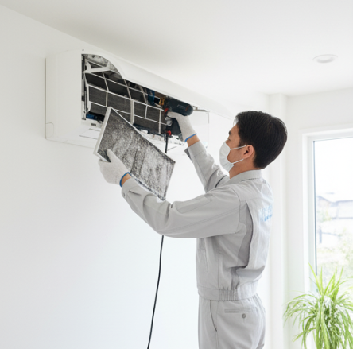

Limpieza técnica
Además de los filtros, es vital limpiar el evaporador y la bandeja de condensados para evitar malos olores.
Ahorro energético
Un equipo sucio trabaja el doble para enfriar lo mismo, disparando tu consumo eléctrico.
¿Necesitas ayuda profesional?
En Barnainstal somos expertos en Aire acondicionado. Contacta con nosotros hoy mismo.
Contactar por WhatsApp